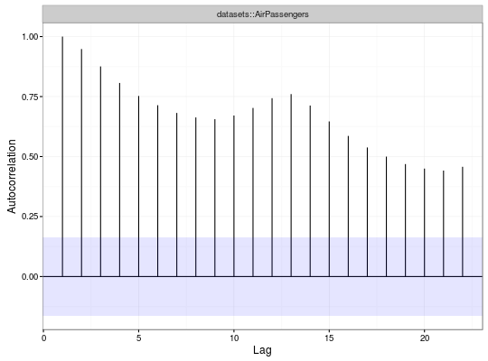
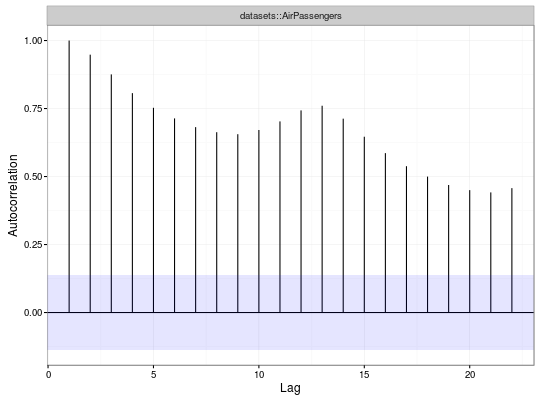
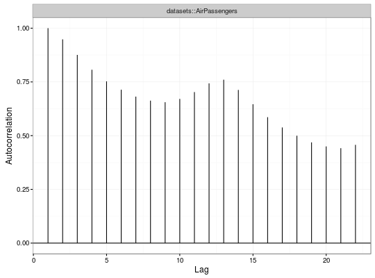

# S3 method for ACF plot(x, show.ci = TRUE, ci = 0.95, ...) # S3 method for ACF autoplot(object, show.ci = TRUE, ci = 0.95, ...)
"ACF" object from ACF.bool indicating whether to show confidence regiondouble containing the 1-alpha level. Default is 0.95array of dimensions $N x S x S$.
The acf function computes the estimated autocovariance or autocorrelation for both univariate and multivariate cases.


